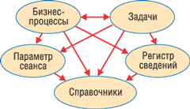
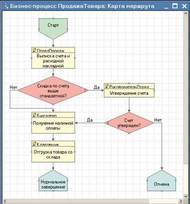
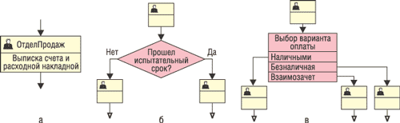
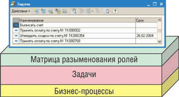
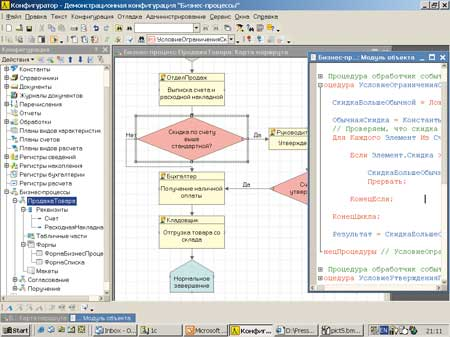
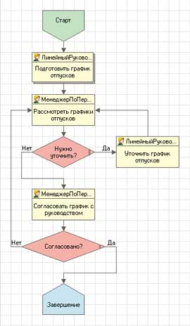
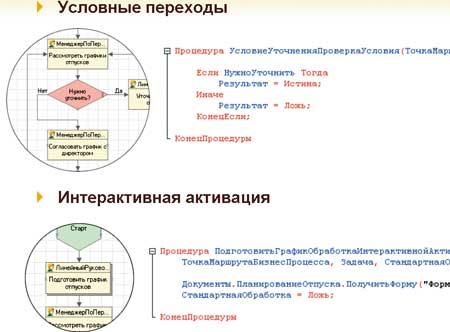
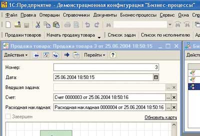

Андрей Колесов
Обсуждая возможности технологической платформы "1С:Предприятие 8.0" (см. например, "1С:Предприятие 8.0" расширяет свои возможности", "BYTE/Россия" № 10'2004), нам уже приходилось подчеркивать, что ее многочисленные новшества связаны с решением трех основных взаимосвязанных задач развития системы:
- повышение производительности и масштабируемости решений;
- расширение функциональности и круга решаемых прикладных задач;
- повышение эффективности разработки, настройки и сопровождения.
Одно из важных новшеств в "1С:Предприятие 8.0" - создание механизма бизнес-процессов (МБП), который был реализован на уровне бета-версии в начале лета прошлого года и должен появиться в рабочем варианте в релизе 8.0.10 до конца I квартала 2005 г. Подчеркнем, что МБП - составная часть технологической платформы, а это означает, что связанные с ним возможности могут стать доступны всем прикладным решениям, созданным на основе "1С:Предприятие 8.0".
В целом можно сказать, что МБП нацелен на повышение эффективности разработки и сопровождения прикладных решений. Однако тут нужно отметить важные качественные отличия от других новшеств этого направления. Дело в том, что если модернизация языка программирования или поддержка групповой разработки рассчитаны на традиционных ИТ-специалистов (программисты, внедренцы), то МБП нацелен на более глубокое вовлечение в процесс проектирования и настройки конкретных прикладных систем специалистов качественно иного уровня - бизнес-аналитиков, консультантов, а также менеджеров заказчика. Более того, эффект МБП с точки зрения клиента проявляется даже в том случае, если пользователь не участвует непосредственно в проектировании бизнес-процессов, а только применяет разработанные кем-то схемы. Возможность формального описания действий системы и визуальное их представление позволяют заказчику лучше понять логику работы решения, в том числе проконтролировать, насколько правильно разработчик выполнил поставленное перед ним задание.
На самом деле, по мнению начальника отдела разработки программ документооборота фирмы "1С" Александра Безбородова, руководившего созданием МБП, новый механизм может даже усложнять разработку решений, так как требует создания и поддержки новых прикладных объектов - бизнес-процессов, их интеграции в готовое решение и связывания с другими объектами - документами, справочниками. Как показывает опыт, при разработке бизнес-процессов поверх готовых конфигураций приходится по-новому смотреть на проектные решения и кое-что переделывать. Сама задача создания бизнес-процесса требует понимания не только основ конфигурирования "1С:Предприятие 8.0", но и предметной области и конкретных потребностей конкретного заказчика. Взамен этот механизм позволяет перенести акцент с управления учетом на управление процессами, автоматизировать потоки работ и соблюдение регламентов.
Таким образом, речь идет еще об одном ключевом направлении развития прикладных решений - повышении уровня их управляемости. Другая важнейшая задача - перейти от схемы, при которой пользователи управляют логикой работы программы, к тому, чтобы программа управляла действиями пользователей. Если раньше сотрудники должны были самостоятельно определять порядок своей работы, то теперь, после описания типичных задач предприятия в виде бизнес-процессов, система сама может формировать для каждого пользователя список задач, которые он должен выполнить.
Появление МБП в прикладных решениях позволяет предприятиям, в том числе и малым, перейти от традиционной функциональной модели управления к современной процессно-ориентированной схеме, качественно улучшить деятельность предприятия за счет реинжиниринга и автоматизации бизнес-процессов. Наиболее эффективной оказывается автоматизация ключевых бизнес-процессов - которые начинаются и заканчиваются во внешней по отношению к предприятию среде.
В информационных материалах "1С:Предприятие 8.0" говорится, что цель механизма управления бизнес-процессами - автоматизация цепочек связанных операций, направленных на достижение общей цели, обычно в контексте организационной структуры, определяющей функциональные роли и связи. Автоматизация бизнес-процессов позволяет повысить качество организации работы и эффективность управления.
Повышение качества. Бизнес-процессы формулируют и реализуют правила выполнения отдельных операций и их взаимосвязь, что позволяет значительно сократить или даже полностью исключить ошибки в ходе выполнения бизнес-процесса, связанные с человеческим фактором. Работа с простым списком заданий позволяет сотрудникам сконцентрироваться на выполнении своих непосредственных обязанностей.
Повышение эффективности. Использование МБП позволяет формализовать организационную деятельность и возложить обязанности по управлению совместной работой сотрудников на прикладное решение, что ведет к более эффективному использованию рабочего времени.
Новые возможности. Данные о выполнении задач и ходе бизнес-процессов могут служить источником информации для оптимизации деятельности и организационной структуры предприятия, выявления узких мест и скрытых ресурсов, и стать средством поддержки процессного управления.
Основные сведения о механизме бизнес-процессов
Бизнес-процессы в "1С:Предприятие 8.0" нужны для того, чтобы объединять отдельные операции (выписка счета, прием наличной оплаты, отпуск товара со склада и т. д.) в цепочки взаимосвязанных действий, приводящих к достижению конкретной цели (например, продажа товара за наличный расчет). Участие сотрудников в жизненном цикле бизнес-процесса организовано при помощи ролевой маршрутизации.
МБП обеспечивается сразу несколькими объектами конфигурирования: бизнес-процессы, задачи, регистр сведений и параметр сеанса. Как правило, типы реквизитов адресации задачи и измерений регистра сведений назначаются в виде ссылок на соответствующие справочники, поэтому к четырем перечисленным видам добавляются еще справочники.
Два основных объекта МБП - бизнес-процессы и задачи. Они используют друг друга, а также три вспомогательных объекта (параметр сеанса, регистр сведений и справочники). Вспомогательные объекты не используют ни друг друга, ни основные объекты (рис. 1).
|  | Рис. 1. Схема взаимодействия объектов механизма управления бизнес-процессами.
|
Объект "Задача" предназначен для учета заданий и описывает способ их распределения по исполнителям с учетом организационной структуры предприятия. Адресация заданий сотрудникам определяется реквизитами, в которых можно предусмотреть многомерную ролевую маршрутизацию, например, по ролям, рабочим группам, подразделениям, помещениям, филиалам и т. д. Задачи могут создаваться не только бизнес-процессами, но и другими объектами информационной базы или непосредственно пользователями. Более того, в общем случае исполнителем задания может быть не только сотрудник, но и любая внешняя система, например, другая учетная система.
Понятие задачи фактически определяет лишь интерфейс взаимодействия бизнес-процесса с заданием, выполнение которого в общем случае не связано с выполнением операций в самой системе. Например, бизнес-процесс по ходу своего выполнения может потребовать согласования какого-то вопроса с руководителем фирмы. Сформулированная таким образом задача будет, к примеру, адресована секретарю, который станет решать ее любыми доступными ему способами: по телефону, электронной почте и т. д. Задача будет считаться выполненной, когда в систему поступят сведения о получении нужного согласования.
Задачи имеют самостоятельную прикладную ценность как список заданий, назначенных конкретным исполнителям напрямую или посредством ролевой маршрутизации, и могут использоваться отдельно от бизнес-процессов. При формировании списка задач для конкретного сотрудника используется регистр сведений, который обеспечивает нахождение соответствий роль - сотрудник согласно системе адресации, настроенной в задаче. Как правило, для всех бизнес-процессов реализуется единый список задач.
Объект "Бизнес-процесс" описывает логику выполнения операции для достижения той или иной цели и управляет жизненным циклом созданных бизнес-процессов (экземпляров) - от момента старта до момента завершения. Логика бизнес-процесса (взаимосвязь и последовательность обхода точек маршрута, условные переходы и т. п.) представляется в виде карты маршрута, которая позволяет изобразить маршрут бизнес-процесса в виде связного графа и легко описывать алгоритмы условных переходов и реакцию бизнес-процесса на различные события (рис. 2). При работе пользователя с прикладным решением предусмотрена возможность отображать актуальную карту маршрута для конкретных экземпляров бизнес-процессов с учетом пройденных и активных точек маршрута.
|  |
| Рис. 2. Карта маршрута наглядно описывает логику бизнес-процесса.
|
При создании карты маршрута бизнес-процесса используются справочники с предопределенными данными (ролями, подразделениями и т. п.) для установки их значений в атрибуты адресации точек маршрута. Бизнес-процессы создают задачи при переходе на точки маршрута и используют регистр адресации для обработки групповых точек. Параметр сеанса используется бизнес-процессами для интерактивной активации невыполненных задач для текущего исполнителя.
Задачи сообщают бизнес-процессам о своем выполнении, вызывая тем самым их продвижение дальше по маршруту. Регистр сведений используется для отбора задач для текущего исполнителя в соответствии с установленным параметром сеанса. Справочники используются при формировании задач вне бизнес-процессов (например, вручную) или при отборе задач.
Операции, выполняемые в ходе бизнес-процесса, представлены на карте маршрута точками действий (рис. 3, а), которые содержат информацию о том, кто и что должен сделать на данном этапе. Например, для бухгалтера это может быть принять оплату наличными, для кладовщика - выдать товар со склада по накладной, для системного администратора - зарегистрировать нового сотрудника в сети и электронной почте.
|  |
| Рис. 3. Графическое представление основных элементов карты маршрута: а - точка действия; б, в - условная маршрутизация (бинарные и множественные переходы).
|
Исполнитель может определяться персонально (Иванов) или с учетом ролевой маршрутизации ("Кладовщик", "Руководитель отдела продаж"). При переходе бизнес-процесса на точку действия он автоматически формирует задачи, устанавливая в них предусмотренные реквизиты адресации. Когда исполнитель пометит задачу как выполненную, бизнес-процесс автоматически переходит к следующей точке маршрута в соответствии с картой.
В точке действия возможно также назначение групповых и коллективных задач. В первом случае некое действие должны выполнить все члены группы (например, всем менеджерам нужно предоставить ежемесячный отчет). Во втором - действие должен выполнить только один из членов группы (например, завизировать документ у одного из старших менеджеров). В точке действия можно описать проверку необходимых условий выполнения задачи, интерактивный диалог с пользователем при переходе далее по маршруту и указать, например, какие документы следует открывать при активации задач, связанных с данной точкой маршрута бизнес-процесса.
Бизнес-процессы в "1С:Предприятие 8.0" допускают несколько типов маршрутизации. Заметим, что в реальных картах бизнес-процессов, как правило, встречаются все эти типы.
Жесткая. Карта бизнес-процесса не включает условных и параллельных переходов с жестко определенными адресатами для каждой точки маршрута. Отклонение таких бизнес-процессов не допускается.
Свободная. Адресаты точки карты маршрута бизнес-процесса не установлены и определяются программно или интерактивно в течение жизненного цикла бизнес-процесса.
Условная. Карта маршрута предусматривает проверку условий и переход по соответствующим ветвям (рис. 3, б и в). Переходы могут быть как бинарными (условие), так и множественными (выбор варианта).
Параллельная. Карта маршрута предусматривает разделение бизнес-процесса на параллельные ветви с возможностью последующего слияния (ожидания). Продвижение бизнес-процесса по каждой из параллельных ветвей происходит независимо, по мере выполнения соответствующих задач.
Ключевым понятием в механизме бизнес-процессов и задач в "1С:Предприятии" выступает система адресации, которая обеспечивает возможность не только персональной, но и ролевой адресации задач участникам бизнес-процессов.
Ролевая маршрутизация позволяет назначать задания не только конкретным исполнителям, но и ролям, группам, подразделениям и т. д., как это определено в прикладном решении. Она построена на взаимодействии объектов "Задача" и "Регистр сведений": первый определяет состав реквизитов адресации (роли, подразделения и т. д.), а второй отражает актуальную (соответствующую текущему моменту) информацию о принадлежности сотрудников ролям, подразделениям, рабочим группам и т. д.
С помощью регистра сведений можно реализовать механизм замещения или учета отсутствия сотрудников. Например, если в нем указано, что роль главного бухгалтера исполняет Иванов, а Иванов уходит в отпуск и его обязанности передаются Петрову, то запись в регистре сведений меняется так, чтобы роль главного бухгалтера исполнял Петров. По возвращении Иванова из отпуска соответствующая информация восстанавливается.
Подводя итог, можно констатировать, что механизм бизнес-процессов складывается из следующих основных компонентов:
- многомерной системы адресации задач исполнителям (роли, отделы, организации, группы и т. д.);
- визуального проектирования карты бизнес-процесса;
- генерации задач по исполнителям;
- ролевой маршрутизации;
- перехода по точкам маршрута в соответствии с картой бизнес-процесса.
А общая логика выполнения бизнес-процессов выглядит примерно так (рис. 4): бизнес-процессы формируют задачи, устанавливая нужные значения в их реквизитах адресации (роли, группы, отделы). Конечные исполнители определяются с помощью "матрицы разыменования", которая, например, устанавливает соответствие пользователей ролям.
|  | Рис. 4. Организация бизнес-процессов в системе "1С:Предприятие".
|
Практическая реализация
По ходу статьи мы часто использовали термин "бизнес-процесс", хотя порой под ним понимают разные вещи. С одной стороны, бизнес-процесс - это обобщенное описание последовательности действий при выполнении каких-то деловых задач (например, продажа товара). В данном случае такое описание реализуется в виде программы (только представленной не в кодах, а в виде карты маршрута), которую можно условно назвать частным бизнес-решением. С другой стороны, бизнес-процесс - это выполнение конкретных действий в соответствии с этим описанием (при обслуживании конкретного покупателя), т. е. выполнение написанной ранее программы. В соответствии с терминологией "1С" в первом случае мы будем использовать термин "бизнес-процесс" (БП), во втором - "экземпляр бизнес-процесса" (ЭБП).
БП создают разработчики, а пользователи выполняют свои действия с помощью ЭБП. Разработка БП ведется в приложении "Конфигуратор" (инструмент разработки "1С:Предприятие")*, исполнение ЭБП - в среде прикладных решений (среда исполнения "1С:Предприятие").
* Когда речь идет о БП в "1С:Предприятие 8.0", напрашивается параллель с механизмом макрокоманд в Microsoft Office, который также нацелен на автоматизированное выполнение последовательности отдельных функций офисных приложений. Но все же аналогом макрокоманд скорее следует считать давно имеющийся в "1С:Предприятии" механизм "обработок". МБП реализует, с одной стороны, более сложную логику выполнения операций, а с другой - совершенно иной подход к разработке БП.
Конфигуратор системы "1С:Предприятие" (рис. 5) предоставляет широкие возможности для создания бизнес-процессов, логика которых задается с помощью маршрутных карт. И здесь нужно сделать еще одно важное замечание. Вообще говоря, программирование бизнес-процессов было возможно в "1С:Предприятии" и ранее, но только на уровне языка программирования. Новый механизм автоматизирует эту процедуру, предлагая визуальные средства проектирования и настройку программы с помощью методов параметризации и сводя к минимуму объем кодирования (или вовсе исключая написание кода). Все это теперь реализовано на уровне платформы, которая содержит объекты метаданных и механизмы, обеспечивающие единообразную реализацию бизнес-процессов в прикладных решениях.
|  |
| Рис. 5. Разработка бизнес-процесса в среде "Конфигуратора".
|
Подавляющее большинство известных визуальных средств программирования - это по сути лишь надстройка над традиционными редакторами написания кода, автоматизирующая создание этого кода (в качестве примера можно привести и Visual Studio, и Delphi, и различные системы моделирования ПО на базе UML). Результат их работы - программы, реализованные на исходном коде того или иного языка (правда, некоторые поставщики инструментария прячут отдельные модули в двоичном формате, но это скорее исключение). Соответственно разработчик при желании всегда может перейти от визуального проектирования к традиционному программированию "руками".
В этой связи хотелось бы обратить внимание читателя на то, что индустриальный подход к автоматизации бизнес-процессов подразумевает разработку специализированных языков описания БП. Соответственно программы, написанные на таких языках, могут исполняться в любой системе, поддерживающей необходимые стандарты. Пример - язык Business Process Executive Language (см. статью "Автоматизация бизнес-процессов с помощью BPEL", "BYTE/Россия" No 2'2005).
Механизм бизнес-процессов, реализованный в "1С:Предприятие 8.0", не претендует на подобную универсальность, ориентирован на реализации только в данной среде и оптимизирован для этих целей. Это выражается и в том, что в результате визуального проектирования БП разработчик не получает некоторую программу на исходном коде внутреннего языка "1С:Предприятие 8.0". С некоторой долей упрощения можно говорить, что исходный код создаваемой программы состоит как раз из визуального представления ее логики (карта маршрута), дополненного отдельными фрагментами на языке программирования.
Таким образом, карта маршрута служит одновременно и инструкцией по выполнению последовательности действий бизнес-процесса для системы, и иллюстрацией структуры этих действий для пользователя, и средством отображения текущего состояния бизнес-процесса.
Пример проектирования бизнес-процесса
В качестве иллюстрации рассмотрим пример создания бизнес-процесса "Планирование отпусков". Для этого нужно выполнить следующие основные шаги.
Шаг 1. Словесное описание бизнес-процесса:
- всем линейным руководителям - написать предложения;
- линейный руководитель заполняет документ "предложение по графику отпусков";
- менеджер по персоналу рассматривает его - отклоняет, просит уточнить или пересмотреть, принимает;
- в какой-то момент (например, когда большинство сотрудников попали в график) менеджер направляет его руководителю;
- если принимается, то бизнес-процесс завершен.
Шаг 2. Определение адресации.
Сделанное описание позволяет выделить бизнес-роли - линейный руководитель, менеджер по персоналу, руководитель, - которые нужно завести в справочнике "Роли Пользователей" для того, чтобы использовать их для адресации точек маршрута будущего бизнес-процесса. Роли записываются в справочник в виде предопределенных данных.
Чтобы задания доставлялись не ролям, а пользователям, необходимо указать соответствие пользователей данным ролям. Это делается с помощью специального регистра сведений, назначенного как регистр адресации для задач конкретного бизнес-процесса. В регистр нужно занести информацию о том, что, например, Иванов выполняет роль менеджера по кадрам, Петров - это руководитель организации, а Федоров и Сидоров - линейные руководители. Отметим, что соответствие пользователей ролям может меняться с течением времени - скажем, из-за отпусков или кадровых изменений. При этом механизм бизнес-процессов будет обеспечивать доставку заданий соответствующим пользователям с учетом изменений ролей.
Шаг 3. Формирование задачи.
Для работы механизма бизнес-процессов необходим объект "Задачи", с помощью которого будут формироваться задачи для конкретных пользователей. Конфигурирование этого объекта заключается в выборе размерности системы адресации и связывании задач с регистром сведений, в котором прописано соответствие ролей пользователям.
Шаг 4. Проектируем бизнес-процесс.
Создаем первый бизнес-процесс и соединяем его с только что созданной задачей. Затем приступаем к рисованию карты маршрута (рис. 6):
- точка "Старт";
- точки действия в порядке следования;
- добавляем условные переходы;
- точка "Завершение";
- оформляем карту.
|  | Рис. 6. Карта маршрута бизнес-процесса "Планирование отпусков".
|
Шаг 5. Добавляем формы.
Чтобы пользователи могли выполнять свои действия в рамках данного бизнес-процесса, им нужны экранные формы, в которые они будут вводить соответствующие данные:
- форма предложения по графику отпусков (использует документ "ПланированиеОтпуска";
- форма для рассмотрения всех графиков;
- форма для согласования с руководством.
Шаг 6. Программируем.
Для настройки условных переходов (рис. 7) необходимо написать обработчик проверки условия на встроенном языке. Обработчик возвращает результат, который влияет на направление дальнейшего пути бизнес-процесса - направо или налево. Чтобы в процессе выполнения задач у пользователей открывались нужные им формы, нужно написать обработчики "ПриИнтерактивнойАктивации" у соответствующих точек маршрута. Эти обработчики могут открывать формы, документы, выполнять предварительную обработку и т. д.
|  |
| Рис. 7. Программная реализация отдельных блоков бизнес-процесса.
|
Шаг 7. Посмотрим, как это все работает:
- создаем новый экземпляр бизнес-процесса;
- все руководители получают задачу "Подготовить график отпусков";
- после составления всех планов они все вместе поступают на рассмотрение кадровику в виде задачи "Рассмотреть графики";
- по результатам рассмотрения часть из них отправляется на доработку;
- после доработки и успешного повторного рассмотрения перед менеджером по персоналу ставится задача согласовать их с директором;
- после успешного согласования бизнес-процесс завершается.
Для дальнейшего улучшения этого бизнес-процесса и более тесной его интеграции с прикладным решением можно добавить к нему дополнительные возможности (уже после разработки, т. е. в ходе эксплуатации).
Дальнейшие шаги
Мы закончили создание простейшего бизнес-процесса. При последующей автоматизации операций можно добавить несколько расширенных возможностей.
Обратная связь с документами. Например, чтобы при заполнении документа "График отпусков" автоматически инициировался бизнес-процесс согласования графика, и соответствующая задача появлялась у менеджера по кадрам.
Проверка выполнения. Проверка актуальности и правильности составления графика линейными руководителями до передачи на согласование менеджеру по кадрам (например, не разрешать выполнение других задач при незаполненном графике).
Автоматическая сборка отдельных графиков в обобщенный. Можно предусмотреть в карте маршрута точку автоматической обработки, на которой система сама соберет все графики в общий и отправит его на согласование менеджеру по кадрам.
Согласование как вложенный бизнес-процесс. Сам процесс согласования можно выделить во вложенный бизнес-процесс и использовать его в дальнейшем не только в БП "Согласование отпусков", но и в других БП - например, при заключении договоров, выписке счетов и т. д.
Исполнение бизнес-процессов
Как говорилось выше, исполнение бизнес-процессов выполняется в среде прикладных решений (рис. 8). При этом БП можно рассматривать как объект информационной базы, такой же, как документ или элемент справочника. Его жизненный цикл начинается со старта (вызов метода "Старт" или нажатие соответствующей кнопки в форме объекта бизнес-процесса) и заканчивается при достижении точки завершения при условии выполнения всех задач.
|  |
| Рис. 8. Исполнение бизнес-процесса в прикладном решении.
|
В свою очередь, задачи - это тоже обычные объекты информационной базы, которые формируются как механизмом бизнес-процессов, так и другими прикладными объектами, и даже вручную. Задача имеет два состояния - выполнена либо не выполнена. Если задача сформирована в рамках бизнес-процесса, то по выполнении она сообщает ему об этом, что приводит к продвижению бизнес-процесса дальше по маршруту (при условии, что соблюдены все необходимые для этого условия). Таким образом, задачи выступают как движущая сила бизнес-процессов.
Для конкретного пользователя работа бизнес-процессов проявляется только в том, что он имеет дело со списком задач, которые должен выполнить. Кладовщик, например, совершенно не должен задумываться о своем участии в каких-то процессах, его дело - при получении задания отпустить товар и зафиксировать эту операцию в системе.
В то же время очевидно, что использование механизма бизнес-процессов дает возможность собирать качественно иную информацию о работе системы управления предприятием, что позволяет руководителям проводить объективный анализ эффективности работы как организации в целом, так и отдельных сотрудников.
Подробнее ознакомиться с механизмом бизнес-процессов, реализованным в "1С:Предприятие 8.0", разработчики и пользователи могут с помощью демонстрационной конфигурации, распространяемой на диске "Информационно-технологическое сопровождение" (ИТС). Там представлены три простых бизнес-процесса ("Продажа товара", "Поручение" и "Согласование"), показывающие различные варианты практического применения нового механизма.
От управления вообще к управлению бизнес-процессамиПрошедший год был отмечен началом широкого применения нового термина - Business Process Management (BPM, управление бизнес-процессами). Поначалу его появление вызвало настороженность заказчиков. Действительно, корпоративное ПО изначально было нацелено на решение тех или иных задач управления предприятием, или бизнесом (в широком понимании этого слова - как деятельности организации), и потому было непонятно, что же революционного заключается в BPM. Не есть ли это традиционный ход ИТ-поставщиков, регулярно обновляющих названия, в общем-то, достаточно хорошо известных методов и технологий? Определенную путаницу в умы ИТ-специалистов вносило и то, что аббревиатуру BPM стали использовать разработчики различных категорий программных продуктов: систем управления документами, ERP-решений и инфраструктурного ПО. (Полезный обзор и анализ концепции BPM сделан в статье "Технология BPM в информационной инфраструктуре организации", "BYTE/Россия" No 2'2005.) Однако если рассмотреть концепцию BPM более детально, становится ясно, что ее появление действительно связано с некоторыми качественными изменениями в требованиях заказчиков к ИТ, с одной стороны, и предлагаемых вендорами решений - с другой. Хотя ни о какой революции, конечно, не может быть и речи: идет обычный эволюционный процесс развития ИТ, в ходе которого накопление количественных и локальных качественных изменений в какой-то момент времени позволяет говорить о переходе в новое глобальное качественное состояние. В этой связи мы выделим несколько аспектов.
Говоря о концепции BPM, необходимо упомянуть и о ее связи с технологиями workflow (управление потоками работ). Их родство вполне очевидно, однако между ними ни в коем случае нельзя ставить знак равенства (к сожалению, это встречается даже в профессиональных ИТ-изданиях). Методы workflow, пик популярности которых в мире пришелся на последние годы прошлого столетия, накладывают на процессы автоматизации модель, ориентированную в первую очередь на документы и задания. Данный подход ограничивает применение технологий workflow в основном автоматизацией ручных процессов обработки документов. У BPM таких ограничений нет: участниками процессов могут в равной мере выступать и пользователи, и информационные системы, и другие процессы, а документы и задания рассматриваются лишь как частности, влияющие на реализацию бизнес-процессов, но не носящие основополагающего характера. Все это позволяет применять BPM в связи с более широким кругом вопросов, нежели тот, для которого изначально разрабатывались системы workflow. Наверное, правильнее было бы связать реализацию концепции BPM с совместным использованием технологий workflow и EAI (Enterprise Application Integration, интеграция приложений масштаба предприятия). А учитывая необходимость использования собственно прикладных программ, условную формулу BPM можно записать следующим образом: BPM = workflow + EAI + ERP (Enterprise Resource Planning) + ECM (Enterprise Content Management) И еще один важный момент. Реализация концепции workflow устойчиво ассоциируется с проведением радикального реинжиниринга бизнес-процессов организации. Разумеется, преобразования схемы деятельности предприятия порой просто необходимы, но все же нужно помнить, что внедрение новых автоматизированных систем управления - не самоцель, а лишь средство повышения эффективности работы. BPM отличается более мягким подходом к использованию существующих моделей управления и программных средств их поддержки, минимизируя затраты на реализацию проектов, сохраняя сделанные инвестиции и лучше учитывая специфику конкретного заказчика. |